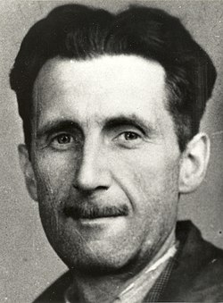

Описание
«Все в городе выглядело бесцветным — кроме расклеенных повсюду плакатов. С каждого заметного угла смотрело лицо черноусого. С дома напротив тоже. СТАРШИЙ БРАТ СМОТРИТ НА ТЕБЯ, — говорила подпись, и темные глаза глядели в глаза Уинстону»... Последний роман «1984» культового британского писателя Джорджа Оруэлла вышел в 1949 году — за год до его смерти. Он имел бешеную популярность в Англии и США, был переведен более чем на шестьдесят языков, неоднократно экранизировался. Но в Советском Союзе долгие годы даже имени его автора никто не слышал... Отечественные политики называли Оруэлла троцкистом. Его книги были под запретом сорок лет. «Роман Оруэлла представляет собой разнузданную клевету на социализм и социалистическое общество», — говорилось об антиутопии «1984» в секретной записке Всесоюзного общества культурной связи с заграницей. И лишь в 1988 году советский литературовед Виктория Чаликова осмелилась назвать Оруэлла не «политическим памфлетистом», а классиком английской литературы, имя которого стоит в ряду с Джонатаном Свифтом и Чарлзом Диккенсом. Тогда же вышел и первый официальный тираж романа. «1984» Оруэлла — это выражение настроения и предупреждение. Настроение, которое оно выражает, очень близко к отчаянию за будущее человека, а предупреждение заключается в том, что если курс движения истории не изменится, то люди по всему миру потеряют свои самые человечные качества, превратятся в бездушные автоматы и даже не будут подозревать об этом. © Немецкий философ Эрих Фромм
Об авторе
Джордж Оруэлл
Британский писатель и публицист Эрик Артур Блэр публиковал свои произведения под псевдонимом. Он родился в индийском городе Мотихари в 1903 году, когда его отец служил там на государственной должности. Когда будущему писателю был один год, он вместе с матерью и сестрой переехал в Англию. Окончил престижную частную школу Итон. Потом много путешествовал. Работал полицейским в Бирме. Перебивался случайными заработками в Европе. Дебютной работой Джорджа Оруэлла стала автобиографическая повесть «Фунты лиха в Париже и Лондоне», изданная в 1933 году. Первую международную славу ему принесли традиционные психологические романы. Но обессмертили его имя антиутопии «1984» и «Скотный двор», которые стали первыми антиутопиями ХХ века и положили начало целому направлению в литературе.